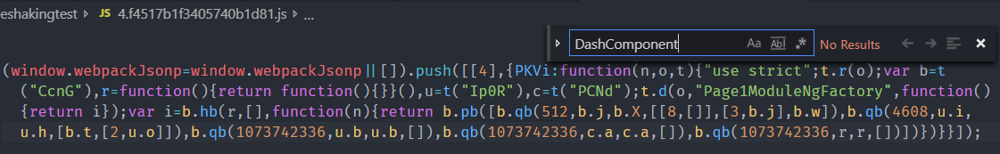
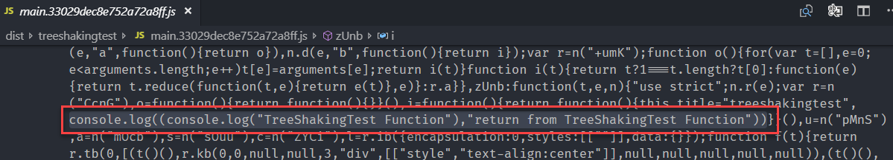

Angular 在建置輸出時，如果加上 --prod 時，會將所有的 bundle 做最小化還有 Tree-Shaking 的行為，將沒有使用的程式碼從 bundle 檔案中移除，但是，實際上輸出結果是否如官方所說，還有什麼細節是需要知道的嗎?
為了驗證這一個功能，將進行以下的測試，首先先準備測試環境，測試環境如下
- 一個 lazy-loading Module，包含一個 DashComponent
- 一個 sharedModule 包含一個 TitleComponent
- 一個 service
測試項目集
測試項目一
這一個測試項目來測試 lazy-loading module 但是 lazy-loading 沒有設定任何的路由設定檔
- page1.module.ts 檔案
1 | import { NgModule } from '@angular/core'; |
- shared.module.ts 檔案內容
1 | import { NgModule } from '@angular/core'; |
- app.module.ts 檔案內容
1 | import { BrowserModule } from '@angular/platform-browser'; |
- app-routing.module.ts
1 | import { NgModule } from '@angular/core'; |
為了方便辨識 Component 是否有被移出 bundle 檔案，所以在 Component 內都新增一個 name 屬性並給予 Component 名稱的文字值，經過 ng build --prod 後，產生了一下的檔案，並檢查了 4.f4517b1f3405740b1d81.js 檔案內容 (此為 lazy-loading module)

4.f4517b1f3405740b1d81.js 檔案內並沒有包含 DashComponent 的文字

這裡沒有看到 DashComponent 的原因是因為在 Page1Module 裡並沒有使用到 DashComponent 所以即使在 declarations 有宣告，程式碼仍不會被包含到 bundle 檔案內
測試項目二
延續上述的情境，如果直接在 DashComponent 內使用 TitleComponent，TitleComponent 是否會被包含至檔案內呢?
-
dash.component.html
1
2<p>dash works!</p>
<app-title></app-title>
再次執行 ng build --prod，並檢視輸出內容
如預期般的沒有被包含進來，因為連 DashComponent 都沒有，怎麼可能會有 TitleComponent
測試項目三
延續上面的環境，將 Page1Module 設定路由，並檢查建置後的結果
1 | import { NgModule } from '@angular/core'; |
檢視 4.461b274d80afee68498a.js 內容

我們可以看到 TitleComponent 與 DashComponent 都被包含到輸出檔案內，也十分合理。這也表示如果我們將 <app-title> 從 dash.component.html 中移除，在輸出檔案裡會看不見 TitleComponent 地存在的


或許有人會很好奇，為什麼只要透過路由設定檔所定義的 Component，即使沒有在任何 template 使用，仍會被輸出到檔案中，這是因為路由設定的 component (routed entry component) 是另外一種定義成 entryComponent 的方法。(官方文件)
測試項目四
在這個測試項目中，我們將路由設定檔拿掉，但將 DashComponent 註冊在 entryComponent 的地方，來觀察一下結果
1 | import { NgModule } from '@angular/core'; |
檢視輸出內容時，發現當 Component 註冊到 entryComponents 時，即使沒有任何人使用到該 Component，仍會被輸出

綜合測試項目一的結果與本項目的測試結果，我們可以發現 Component 註冊在 declarations 與 entryComponents 的差異，也可以驗證官方文件的描述
測試項目五
當 SharedModule 內的 Component 在不同的 Module 中都被使用到，該 component 程式碼會輸出成幾份? 答案: 一份
在這個測試裡，我將 <app-title> 同時在 app.component.html 與 dash.component.html 都有引用，根據輸出檔案的內容，只能在 main.4a9a348ca69cdb67065f.js 檔案內找到 TitleComponent
(2018/11/21 Updated) 有朋友在留言提到，如果是在兩個 lazy-loading module 裡使用 sharedModule 的 component 時 (沒有在 app.component.html 內使用到)，會被輸出至 common 的 bundle 檔案中，當然有圖有真相


測試項目六
Service 新的註冊方式 provideIn 是否真的能被 tree-shake 掉呢?
- data.service.ts
1 | import { Injectable } from '@angular/core'; |
首先不在任何的 component 內注入 DataService，觀察輸出後的結果

在這兩個檔案內都找不到 DataService 的影子，看起來真的被排除了。
測試項目七
這帶來另外一下一個問題，如果將 DataSerivce 在 Page1Module 時，DataService 會在哪裡出現呢?
- dash.component.ts
1 | import { Component, OnInit } from '@angular/core'; |
DataService 會被註冊在 Lazy-loading Module 裡。
但當 app.component.ts 裡也有注入 DataService 時，程式碼出現的地方也會不一樣，將會出現在 main 的檔案中
測試項目八
如果在兩個不同的 lazy-loading 內都有使用到 DataService 時， DataService 會出現在哪裡呢? 答案是會出現在 common 裡

可是當在 app.component.ts 注入 DataService 時，DataService 又會回到 main 的檔案中

測試項目九
將 DataService 註冊在 AppModule 的 providers 裡，且不在任何的 component 內使用，再來看輸出結果
1 | import { BrowserModule } from '@angular/platform-browser'; |
- data.service.ts
1 | import { Injectable } from '@angular/core'; |
建置輸出結果可以看出，不論是否有被使用，都會被輸出
測試項目十
在 Angular 外部寫 function 後，在 Angular component 內使用，會出現什麼事情?
1 | import { Component } from '@angular/core'; |
建置後的結果為


最終的輸出結果十分有趣，直接將 function 轉換到 Angular 內部了
結論
這一篇文章所整理的結果，在效能調整上十分重要，我們知道 main.js 檔案算是一開始要載入的檔案，為了減少 main.js 檔案的大小，service 的註冊與使用就很小心，因為一個不小心就會增加 main.js 的檔案大小，同樣的在 app.component.html 內使用其他 component 時，也會造成 main.js 檔案變大。
另外，我們也不用多擔心 sharedModule 過多的載入會造成檔案肥大，因為如果真的沒有使用到，是不會被輸出的，可以安心使用